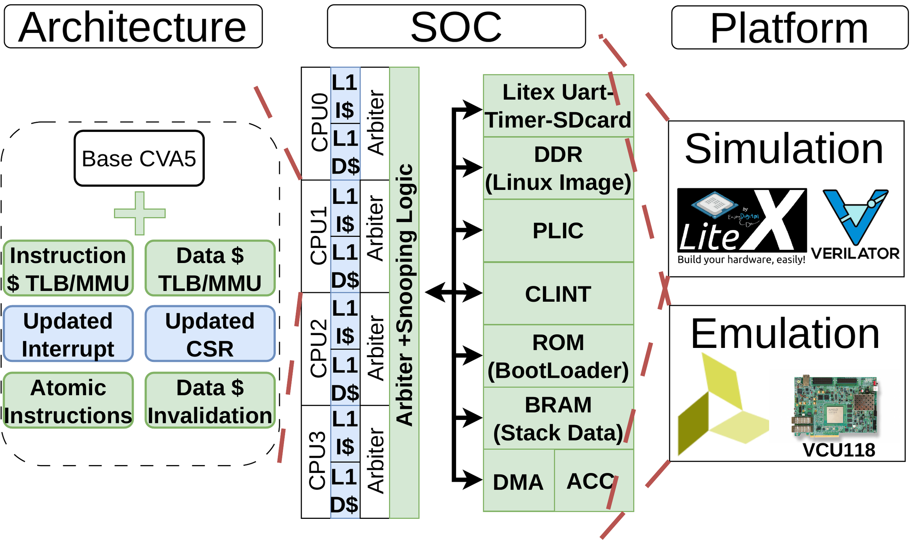

01M.A.Sc. thesis · HPCA under review

THESIS SYSTEM MAPMEERKAT: Accelerators as first-class compute elements
A configurable FPGA framework for moving Linux support from software into hardware and quantifying four major sources of operating-system overhead.
CVA5LinuxLiteXVCU118